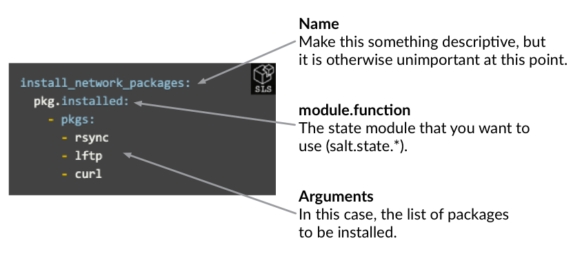
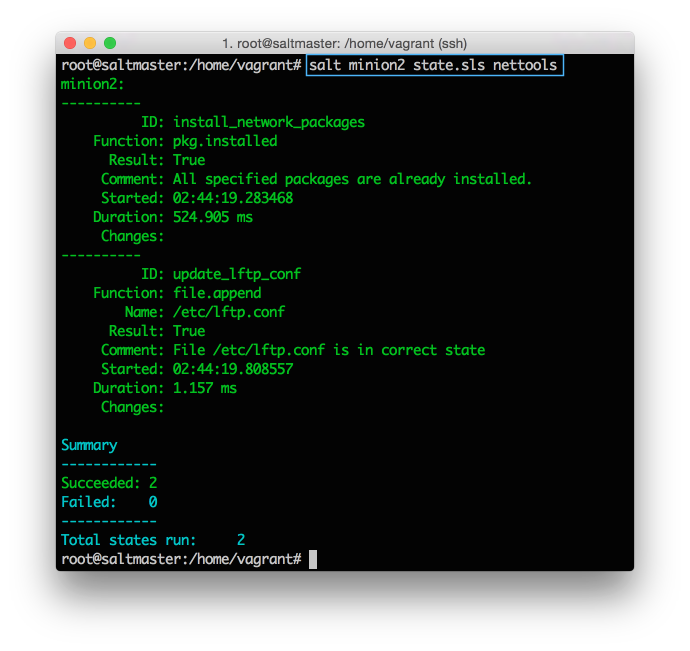

- Demo Environment
- Install SaltStack
- Execute Commands
- Target Systems
- Create a Salt Formula
- Apply and Target Formulas
- Next Steps
Create A Salt Formula
You'll learn how to:
- Define a repeatable, customized definition of an application configuration.
Estimated time: 15 minutes
Difficulty:
Remote execution is a big time saver, but it has some shortcomings. Most tasks you perform are a combination of many commands, tests, and operations, each with their own nuances and points-of-failure. Often an attempt is made to combine all of these steps into a central shell script, but these quickly get unwieldy and introduce their own headaches.
To solve this, SaltStack configuration management lets you create a re-usable configuration template, called a Formula, that describes everything required to put an application into a known configuration.
Formulas are much easier to understand when you see them in action, so let's make one. Formulas are described using YAML, and are simple to create and read.
To simplify things, our Vagrant file maps the /srv/salt folder on your Salt Master to the local salt-vagrant-demo-master/saltstack folder. This means that you can use a local text editor and save the file to the local file system, and Vagrant makes it appear as if it were on the Salt Master.
Using any plain text editor, create a new text file and add the following:
install_network_packages:
pkg.installed:
- pkgs:
- rsync
- lftp
- curl
This Formula calls the pkg.installed state module, and passes a list of three package names for the pkgs argument.
Save this Formula as salt-vagrant-demo-master/saltstack/salt/nettools.sls:

If you are paying close attention, you'll notice that we called the pkg.install module from the command line in the previous section, but we are calling the pkg.installed module in our Formula. The execution modules we called from the command line are different from the state modules that we use when writing Formulas. Many execution modules are wrapped by state modules and are nearly identical, but there are some syntax differences. When writing Formulas, make sure you are calling the salt.state modules and not the salt.modules execution modules.
The following diagram shows a simple representation of how state module functions are called in Salt Formulas:
Managing Files in Salt Formulas
Getting packages installed typically isn't as complicated as getting those packages into a functional state. SaltStack provides a wide range of tools to manage configuration files and to copy entire directories of supplemental files to managed systems.
For example, if we want to distribute a global configuration file for lftp that includes a custom setting that limits download rates, we can do this using file.managed:
install_network_packages:
pkg.installed:
- pkgs:
- rsync
- lftp
- curl
copy_lftp_conf:
file.managed:
- name: /etc/lftp.conf
- source: salt://_tmpl_lftp.conf
In this case, since our configuration change is a single line, we can use file.append to simply insert the new line we want to add:
install_network_packages:
pkg.installed:
- pkgs:
- rsync
- lftp
- curl
update_lftp_conf:
file.append:
- name: /etc/lftp.conf
- text: set net:limit-rate 100000:500000
Lets go ahead and test our Formula. We'll learn about a more powerful method to apply Formulas in the next section, but for now you can use the state.apply command to apply a Formula directly from the command line.
On your Salt Master, run the following command to apply the nettools Formula:
salt minion2 state.apply nettools #state.apply is new in 2015.2, so if you are using an earlier version call state.sls instead.
As you might have guessed, you can use the targeting mechanism to apply this Formula to any set of Salt Minions. For now just pick one or all of your Salt Minions. If everything goes well, you'll get output similar to this (click to enlarge):

If that is not cool enough, apply the Formula again to the same Salt Minion(s), and look at the output:
Salt determines that the system is already in the correct state, so nothing is changed (this is called idempotent in academic circles). Nice.
Restarting Services, Variables, and more
There is a lot more to the state system and Formulas than we'll be able to cover here. Formulas can restart services when changes are made, copy entire directories, explicitly require that other states run first, use variables, and much more.
For now this basic understanding of Formulas is enough to get started. Remember the powerful method we mentioned earlier to apply Formulas? Let's tackle that.